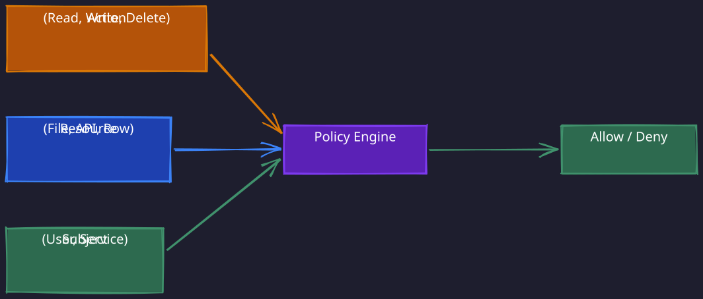
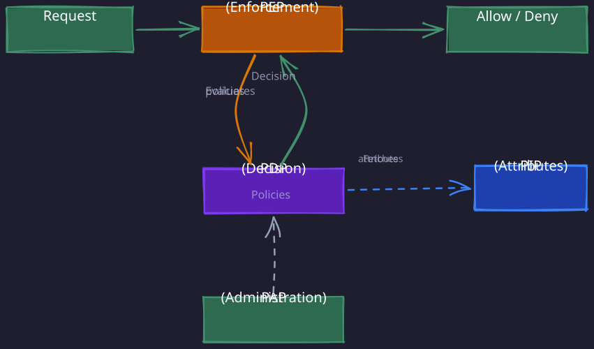
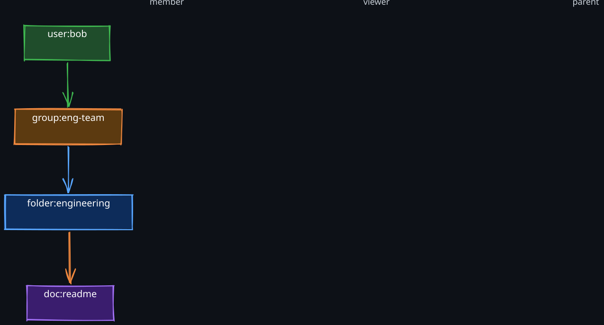
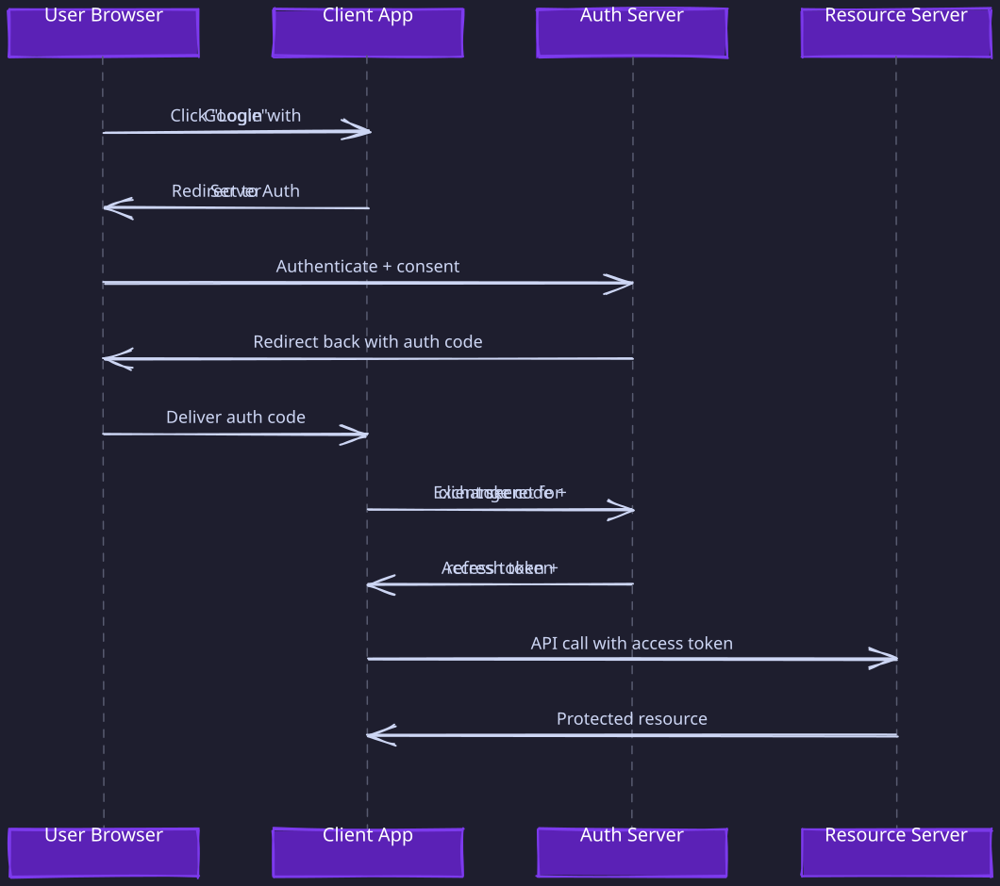
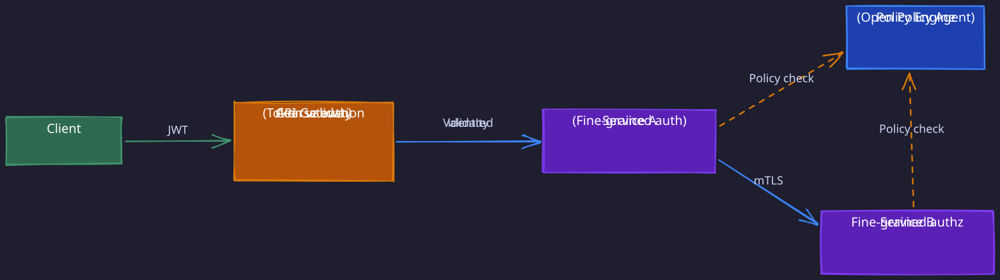

The Story
Google built Zanzibar because authorization at Google’s scale — trillions of access checks per second across Drive, YouTube, Cloud, and Maps — couldn’t be done with traditional RBAC or even ABAC. The key insight was that authorization is a graph traversal problem: “can user X access document Y?” requires walking a chain of relationships (user is member of group, group has access to folder, folder contains document). Zanzibar precomputes these traversals using “leopard indexing” — essentially materialized views for permissions. It’s the same optimization technique used to speed up database reads, repurposed to answer “can this person see this file?” millions of times per second with single-digit millisecond latency.
1. Why Authorization Is a Separate Concern
Authentication answers “who are you?” Authorization answers a fundamentally different question: “what are you allowed to do?” These two concerns must be separated because they change for different reasons and at different rates. A user’s identity is relatively stable, but their permissions shift constantly — people change teams, get promoted, lose access to projects, join new ones.
Two security principles drive this separation:
- Principle of least privilege. Every user, service, or process should operate with the minimum set of permissions necessary to perform its function. If an authenticated user automatically received full access, a single compromised account could destroy the entire system. Authorization is the mechanism that enforces this boundary — it constrains what an authenticated identity can actually reach.
- Defense in depth. Even if authentication is bypassed (a stolen session token, a leaked API key), authorization provides an independent layer of protection. The attacker has an identity, but that identity’s permissions limit the blast radius. Without authorization, authentication failure means total compromise.
In distributed systems, this separation becomes even more critical. A microservice that authenticates an incoming request (via JWT verification, mTLS, etc.) still needs a separate authorization decision for every operation. The identity is established once at the edge; the authorization decision happens at every resource boundary.
2. The Authorization Decision Model
Every authorization system, regardless of its specific mechanism, answers the same fundamental question:
Given a subject (who is requesting), an action (what they want to do), and a resource (what they want to do it to), should the system allow or deny the request?
The differences between RBAC, ABAC, ACLs, and ReBAC are really differences in how they represent and evaluate this triple. Understanding this shared structure makes it easier to reason about each model’s strengths and limitations.

3. Role-Based Access Control (RBAC)
1. The Core Idea
RBAC inserts an indirection layer between users and permissions: the role. Instead of granting permissions directly to individual users, you assign users to roles, and roles carry permissions. This indirection is the key insight — it reduces the management surface from users x permissions to users x roles + roles x permissions.
Why do roles emerge naturally? Consider any organization. Engineers need access to code repositories, CI/CD pipelines, and staging environments. Product managers need access to analytics dashboards, feature flags, and customer data. These groupings are not arbitrary — they mirror the organizational structure. This is Conway’s Law applied to access control: the permission boundaries in your system will naturally reflect the communication boundaries in your organization.
2. Role Hierarchy
Most RBAC implementations support role inheritance, forming a directed acyclic graph (DAG):
A Manager inherits all permissions from Editor, which inherits all permissions from Viewer. This means granting the Manager role automatically includes read and edit capabilities without explicitly listing them. The hierarchy reduces redundancy but introduces a subtlety: changing permissions on a lower-level role propagates upward through the entire hierarchy.
3. The Role Explosion Problem
RBAC works elegantly for small organizations with clear, static role boundaries. It breaks down in complex environments because real-world access requirements are multi-dimensional:
- An engineer in the payments team needs different access than an engineer in the ads team.
- A contractor in the payments team needs different access than a full-time employee in the same team.
- A senior engineer needs access to production, but a junior engineer does not.
To express these distinctions in pure RBAC, you need roles like payments-engineer-fulltime-senior and ads-engineer-contractor-junior. The number of roles grows as the product of all attribute dimensions. An organization with 10 teams, 3 employment types, and 4 seniority levels needs up to 120 roles — and that is before you consider project-level or environment-level distinctions.
This combinatorial explosion is the fundamental limitation that motivates ABAC.
4. Implementation Considerations
RBAC permission checks are fast because they are pre-computed. At authentication time, the system resolves the user’s roles and can cache them (in Redis, in the JWT claims, in a session store). The authorization check becomes a simple set membership test: “does the user’s role set include a role that grants this permission?” This is O(1) with a hash set.
The tradeoff is flexibility. Every new access pattern that does not map cleanly to an existing role requires either creating a new role or adding a one-off exception, both of which erode the model over time.
4. Attribute-Based Access Control (ABAC)
1. Why ABAC Exists
ABAC was designed to solve the role explosion problem. Instead of pre-defining roles for every combination of access dimensions, ABAC evaluates access decisions at runtime using arbitrary attributes of the subject, resource, and environment.
The mental model: RBAC is like a keycard system where each card is pre-programmed with specific doors it can open. ABAC is like a security guard who checks your badge, the time of day, the sensitivity of the room, and your department before deciding whether to let you in. The guard is more flexible but slower.
2. The XACML Policy Model
The standard ABAC architecture (formalized in the XACML specification) decomposes into four components:
| Component | Role | Example |
|---|---|---|
| Policy Enforcement Point (PEP) | Intercepts the request and enforces the decision | API gateway, service mesh sidecar |
| Policy Decision Point (PDP) | Evaluates policies against attributes and returns allow/deny | Open Policy Agent, AWS IAM policy engine |
| Policy Information Point (PIP) | Supplies attributes not present in the request | LDAP directory, HR database, geo-IP service |
| Policy Administration Point (PAP) | Where administrators define and manage policies | Admin console, policy-as-code repository |
XACML (eXtensible Access Control Markup Language) is the XML-based standard that formalized this four-component architecture. Modern implementations like Open Policy Agent and Cedar use the same conceptual model but with more ergonomic policy languages. The key design insight behind separating these components is decoupling policy decisions from application code:
- The PEP is a “dumb enforcer” — it intercepts requests and applies the PDP’s decision, but contains no policy logic. This means you can change authorization rules without modifying or redeploying application code.
- A single PDP can serve multiple PEPs (API gateway, service mesh sidecar, database proxy), ensuring consistent policy evaluation across all enforcement points. Without this centralization, policy logic scatters across every service, making auditing nearly impossible.
- PIPs abstract attribute sources so that the same policy can evaluate attributes from LDAP, databases, or identity tokens without the PDP knowing the specifics of each source.

A policy combines three categories of attributes to produce a decision:
- Subject attributes: user role, department, clearance level, employment type, location
- Resource attributes: data classification, owner, creation date, sensitivity label
- Environment attributes: time of day, IP address, device type, network zone
Example policy: “Allow access if the subject’s department matches the resource’s owning department AND the resource’s classification is not ‘restricted’ AND the request originates from the corporate network.” This single policy replaces what would require dozens of roles in an RBAC system.
3. Why ABAC Is More Expensive
The flexibility of ABAC comes at a cost. RBAC permission checks are a pre-computed lookup — the user’s roles are resolved once and cached. ABAC requires runtime policy evaluation for every request:
- The PEP intercepts the request and collects available attributes.
- The PEP calls the PDP with the subject, action, resource, and environment attributes.
- The PDP may need to fetch additional attributes from PIPs (network calls to LDAP, databases, etc.).
- The PDP evaluates the request against all applicable policies.
- The PDP returns a decision.
Steps 3 and 4 are where the cost lives. Fetching attributes from external systems adds latency. Evaluating complex policies with boolean logic, regular expressions, or set operations adds CPU cost. At high request rates, the PDP becomes a critical-path dependency.
Mitigation strategies:
- Cache frequently-accessed attributes at the PDP
- Push commonly-used attributes into the request context (e.g., JWT claims) to avoid PIP lookups
- Use a compiled policy language (like Rego in Open Policy Agent) rather than interpreted XML
- Deploy PDP as a sidecar or library rather than a remote service to eliminate network hops
4. RBAC vs. ABAC: When to Use Each
| Dimension | RBAC | ABAC |
|---|---|---|
| Complexity of access rules | Simple, role-aligned | Multi-dimensional, context-dependent |
| Performance | Fast (pre-computed lookup) | Slower (runtime evaluation) |
| Auditability | Easy (who has which role) | Harder (which policies applied to which attributes) |
| Management overhead | Role proliferation over time | Policy complexity over time |
| Best for | Internal tools, well-defined org structures | Cloud platforms, multi-tenant systems, regulatory environments |
In practice, most large systems use a hybrid: RBAC for coarse-grained access (which service can a user reach?) and ABAC for fine-grained decisions within that service (which records can they see?).
5. Access Control Lists (ACLs)
1. Per-Resource Permissions
ACLs take the opposite perspective from RBAC. Where RBAC is role-centric (“what can this role do?”), ACLs are resource-centric (“who can access this resource?”). Each resource maintains a list of entries specifying which subjects have which permissions.
A typical ACL entry: (subject: user-123, permission: read, write) attached to resource: document-456.
This model is intuitive for file systems and document stores — you look at a file and see exactly who has access. But it has a fundamental scaling problem: if you need to answer “what can user X access across all resources?”, you must scan every resource’s ACL. This is the inverse query problem, and it becomes prohibitively expensive at scale.
2. The Relationship to RBAC
ACLs and RBAC are not competing models — they address different dimensions of the same problem:
- RBAC answers: “given a user, what permissions do they have?” (subject-centric)
- ACLs answer: “given a resource, who can access it?” (resource-centric)
Most real systems combine both. Google Drive, for example, uses RBAC for organizational defaults (everyone in the engineering org can access the engineering shared drive) and ACLs for per-document sharing (this specific document is shared with these specific people).
6. Relationship-Based Access Control (ReBAC)
1. Why ReBAC Emerged
Both RBAC and ACLs struggle with a common real-world pattern: inherited permissions through relationships. Consider Google Drive:
- A user owns a folder.
- The folder contains a document.
- The user should automatically have access to the document because they own the parent folder.
In pure RBAC, you would need to explicitly grant the user a role on every document. In pure ACLs, you would need to copy the folder’s ACL to every document it contains. Both approaches are fragile and expensive to maintain.
ReBAC (Relationship-Based Access Control) solves this by modeling permissions as a graph of relationships between objects. The authorization question becomes a graph traversal: “is there a path from this user to this resource through a chain of relationships that grants the requested permission?“
2. The Zanzibar Model (General-Purpose ReBAC)
Google’s Zanzibar system (published 2019) is the canonical general-purpose implementation of ReBAC and the most common reference point in system design interviews. It stores authorization data as relation tuples:
<object>#<relation>@<subject>
Examples:
doc:readme#owner@user:alice— Alice is the owner of doc:readmefolder:engineering#viewer@group:eng-team— The eng-team group has viewer access to the engineering folderdoc:readme#parent@folder:engineering— doc:readme is inside the engineering foldergroup:eng-team#member@user:bob— Bob is a member of the eng-team group
The authorization check for “can Bob view doc:readme?” becomes a graph traversal:

The system follows the chain: Bob is a member of eng-team, eng-team has viewer access to the engineering folder, the engineering folder is the parent of doc:readme, and viewers of a parent folder are viewers of its children. Therefore, Bob can view doc:readme.
1. Namespace Configuration
Zanzibar uses namespace configurations to define the schema — which relations exist for each object type and how permissions are computed from relations:
name: "doc"
relation { name: "owner" }
relation { name: "editor" }
relation { name: "viewer" }
relation { name: "parent" }
// owners are also editors
// editors are also viewers
// viewers of the parent folder are also viewers of this doc
This configuration defines the permission expansion rules. When checking “can X view this doc?”, the system checks:
- Is X a direct viewer?
- Is X an editor (editors can view)?
- Is X an owner (owners can edit, and editors can view)?
- Is X a viewer of the parent folder?
Each step is a graph traversal that may recursively expand further.
2. Zanzibar at Scale
Zanzibar is designed for Google’s scale — millions of authorization checks per second with low latency. Key design decisions:
Consistency model and the “new enemy problem.” Zanzibar is a globally distributed system backed by Google Spanner. When a relation tuple is deleted (e.g., a user is removed from a group), the deletion is committed at a specific Spanner timestamp. But authorization checks may be served by replicas that have not yet applied this write — they see stale data and incorrectly grant access to someone who has been removed. This is the “new enemy problem”: the system continues to trust a revoked identity because the revocation has not yet propagated.
Zanzibar solves this with zookies (opaque consistency tokens). A zookie encodes the Spanner commit timestamp of a write. When the application removes a user from a group, it receives a zookie representing that write’s timestamp. Subsequent authorization checks include this zookie, and Zanzibar ensures the check is evaluated at a snapshot no earlier than the zookie’s timestamp — guaranteeing the check sees the deletion. The tradeoff: requiring a zookie on every check forces Zanzibar to serve reads at a specific (possibly recent) timestamp, which may increase latency because the serving replica must wait for its local state to catch up to that timestamp. Without a zookie, Zanzibar can serve from whatever snapshot is locally available, which is faster but potentially stale.
Caching and the leopard indexing system. The graph traversal for deep permission chains is expensive. Group membership can be deeply nested — group A contains group B, which contains group C — making a naive membership check a recursive traversal. Zanzibar’s leopard indexing system pre-computes and indexes these transitive membership expansions so that checking “is Bob a member of eng-team?” is a direct lookup rather than a recursive graph walk. The tradeoff is write-path cost: every time a group membership changes, the leopard index must be updated to reflect the new transitive closure, adding latency and computational cost to write operations.
Check latency. Despite the graph model, Zanzibar achieves p50 latency under 10ms for most checks. This is possible because real-world permission graphs are relatively shallow (typically 3-5 hops) and the hot paths are cached.
Open-source implementations: SpiceDB, OpenFGA (by Auth0/Okta), and Authzed are all inspired by the Zanzibar paper and implement the same tuple-based model.
3. ReBAC for Trust and Safety Content Moderation
Zanzibar is designed for general-purpose authorization (file sharing, org permissions, nested groups). But ReBAC also appears in a very different context: trust and safety platforms where content moderators need fine-grained, case-level access to user data.
1. The Problem
Content moderation platforms must enforce a strict version of least privilege. When a reviewer is assigned a case (e.g., a spam report or policy violation), they need temporary access to the reported content, the content author’s profile, and related entities. But they should not have access to any user data outside their assigned cases. Traditional RBAC grants a “reviewer” role access to all content in the system, which is far too broad — a single compromised reviewer account would expose every user’s data. ABAC could model this, but the policies become complex and the runtime evaluation cost is high for every access check.
2. Modeling Case Assignment as Relationships
ReBAC provides an elegant solution: model case assignments as relationships between the reviewer and the entities involved in the case.
When a case is assigned to a reviewer, the system creates relationship tuples:
case:12345#assignee@reviewer:alice
case:12345#target@member:bob
case:12345#content@post:789
These tuples encode: Alice is assigned to case 12345, which involves member Bob and post 789. The authorization check for “can Alice view Bob’s profile?” traverses: Alice is assigned to case 12345 → case 12345 targets member Bob → GRANTED. If Alice tries to access a member not involved in any of her cases, the traversal finds no path → DENIED.
3. Key Differences from Zanzibar-Style ReBAC
Content moderation ReBAC diverges from Zanzibar in several important ways:
-
Temporal permissions with expiry. Relationships have TTLs — a case assignment might expire after 72 hours, after which the reviewer loses access automatically. This is critical for moderation: access should be revoked when a case closes or times out, without requiring an explicit deletion. Zanzibar has no built-in expiry; relationships persist until explicitly removed.
-
Shallow relationship graph. The graph is typically 1-2 hops deep (reviewer → case → target entity). There are no deeply nested group hierarchies or permission inheritance chains. This means the access check is a direct lookup, not a recursive graph traversal — no need for leopard-style indexing.
-
Simpler backend. A key-value store mapping users to their active case relationships is sufficient. Each user’s context is a JSON document listing their active source-target relationships with expiry timestamps. No dedicated graph engine or Spanner-backed global database required.
-
Multi-layer authorization. ReBAC typically runs alongside RBAC and policy-based access control (PBAC) in a layered architecture:
- RBAC runs first as a coarse gate: is this user a reviewer at all? If RBAC denies, skip everything else.
- ReBAC, TBAC (token-based), and PBAC (policy-based) run in parallel for fine-grained checks.
- Aggregation: any layer returning DENIED produces a final DENIED (fail-closed). This layered approach preserves backward compatibility while incrementally adopting ReBAC.
-
Write-heavy workload. Unlike Zanzibar (which is read-heavy — millions of checks per second against a relatively stable graph), moderation ReBAC is write-heavy. Cases are constantly being created, assigned, reassigned, and closed, each operation creating or expiring relationships. The system must handle high write throughput with low latency on the relationship store.
4. Why This Matters for Interviews
Content moderation is a common system design topic. Understanding how authorization works at the case level — with temporal access, relationship-based scoping, and multi-layer checks — demonstrates depth beyond generic “use RBAC” answers. When designing a moderation system, the authorization model is a key architectural decision that affects data access patterns, audit requirements, and privacy compliance.
4. Zanzibar vs. Domain-Specific ReBAC
| Dimension | Zanzibar-Style (General Purpose) | Domain-Specific (e.g., Content Moderation) |
|---|---|---|
| Graph depth | Deep (5-10 hops, nested groups) | Shallow (1-2 hops, case → entity) |
| Permission computation | Computed permissions via namespace configs | Direct relationship lookup |
| Temporal access | No built-in expiry (explicit deletion required) | Expiry-based (TTL on relationships) |
| Consistency | Zookies for causal consistency | Eventual consistency acceptable (short-lived access) |
| Backend | Dedicated graph engine (Spanner-backed) | Key-value store or relational DB |
| Scale concern | Read-heavy (millions of checks/sec) | Write-heavy (case assignments create/expire frequently) |
| Best for | File sharing, org permissions, nested groups | Moderation, support tickets, incident response |
The key insight is that ReBAC is not a single architecture — it is a design pattern. The relationship graph can be deep and general-purpose (Zanzibar) or shallow and domain-specific (content moderation). The right implementation depends on the depth of the permission hierarchy, the read/write ratio, the need for temporal access, and the consistency requirements.
7. OAuth 2.0 for Authorization
OAuth 2.0 is not an authentication protocol — it is an authorization delegation protocol. The problem it solves: how can a user grant a third-party application limited access to their resources on another service, without sharing their password? Before OAuth, if you wanted a third-party app to access your email, you gave that app your email password. The app had full access to everything, and you could only revoke it by changing your password. OAuth replaces this with scoped, revocable tokens.
2. Grant Types and When to Use Each
| Grant Type | Use Case | Flow |
|---|---|---|
| Authorization Code | Web apps with a backend server | User redirected to auth server, server exchanges code for token |
| Authorization Code + PKCE | Mobile apps, SPAs (public clients) | Same as above, but with proof key to prevent interception |
| Client Credentials | Service-to-service (no user involved) | Service authenticates directly with client ID + secret |
| Device Code | Input-constrained devices (smart TVs, CLIs) | Device displays code, user authorizes on a separate device |
The Resource Owner Password Credentials grant (user gives password directly to the client) is deprecated because it defeats the purpose of OAuth — the whole point is to avoid sharing passwords with third parties.
3. Why the Authorization Code Flow Has a Redirect
The authorization code flow is the most common and the most misunderstood. The redirect is not incidental — it is the critical security mechanism.

The key insight: the client secret never touches the browser. The browser only sees the authorization code, which is useless without the client secret. The actual token exchange happens server-to-server (step 6), where the client proves its identity with its secret. This prevents a malicious browser extension or network sniffer from stealing a token.
For public clients (mobile apps, SPAs) that cannot securely store a client secret, PKCE (Proof Key for Code Exchange) adds a dynamically-generated verifier. The client creates a random code_verifier, sends a hash of it (code_challenge) with the authorization request, and must present the original code_verifier when exchanging the code. This prevents an attacker who intercepts the authorization code from exchanging it, because they do not have the original verifier.
4. Token Scopes
Scopes are the mechanism for fine-grained authorization in OAuth. When requesting a token, the client specifies the scopes it needs (e.g., read:email, write:calendar, admin:org). The authorization server presents these scopes to the user for consent, and the issued token is limited to the approved scopes.
Scopes enforce the principle of least privilege at the token level. A calendar widget only needs read:calendar — it should not receive a token that can also delete your email. If the token is compromised, the damage is limited to the approved scopes.
Scope design guidance:
- Define scopes per resource and per action:
resource:action(e.g.,repos:read,repos:write) - Avoid overly broad scopes like
all:admin— they undermine the principle of least privilege - Use hierarchical scopes when the resource model supports it:
org:readimpliesorg:repos:read
8. JWT for Distributed Authorization
1. Why JWTs Enable Stateless Verification
In a monolithic application, authorization is straightforward: the service checks the user’s session in a shared database. In a distributed system with dozens of microservices, this shared database becomes a bottleneck and a single point of failure. Every service, on every request, would need to query the central auth service.
JWTs solve this by encoding the authorization claims (user ID, roles, scopes, expiry) into a self-contained, cryptographically signed token. Any service that possesses the issuer’s public key can verify the token independently — no network call to the auth service required.
The structure of a JWT:
- Header: signing algorithm (RS256, ES256) and key ID
- Payload: claims —
sub(subject),iss(issuer),exp(expiry),aud(audience), plus custom claims likeroles,scopes,tenant_id - Signature:
sign(header + payload, private_key)— only the issuer’s private key can produce a valid signature
The verification flow at any service: decode the header, fetch the issuer’s public key (from a JWKS endpoint, cached locally), verify the signature, check expiry and audience claims. If all checks pass, the claims are trusted without contacting the issuer.
2. The Revocation Tradeoff
The statelessness that makes JWTs powerful also creates their biggest limitation: you cannot revoke a JWT before it expires. Once issued, the token is valid at every service until its exp claim passes. If a user’s access is revoked, logs out, or their account is compromised, the token continues to work.
This is a fundamental tradeoff between performance (no central check on every request) and security (immediate revocation capability).
Mitigation strategies, in order of increasing complexity:
| Strategy | How it works | Tradeoff |
|---|---|---|
| Short expiry | Set exp to 5-15 minutes; use refresh tokens for renewal | User must re-authenticate more frequently via refresh flow |
| Token blacklist | Maintain a distributed blacklist (Redis) of revoked token IDs (jti claim) | Re-introduces a centralized check, partially negating the stateless benefit |
| Token versioning | Store a per-user token version in a fast cache; reject tokens with old versions | Requires a cache lookup per request, but the cache is small and fast |
| Event-driven invalidation | Publish revocation events via Kafka; services update local blacklists | Eventually consistent — there is a window where revoked tokens are still accepted |
The practical approach in most production systems: short-lived access tokens (5-15 minutes) combined with longer-lived refresh tokens stored securely. The access token is stateless and fast to verify. The refresh token is checked against the central auth service when it is used to obtain a new access token, providing a revocation checkpoint.
3. JWT Signing: Symmetric vs. Asymmetric
| Approach | Algorithm | Who can verify | Use case |
|---|---|---|---|
| Symmetric (HMAC) | HS256 | Only services that share the secret | Single service or tightly-coupled services |
| Asymmetric (RSA/ECDSA) | RS256, ES256 | Anyone with the public key | Distributed microservices, third-party consumers |
Asymmetric signing is the standard choice for distributed systems because it allows any service to verify tokens without possessing the signing secret. The issuer publishes its public keys at a JWKS (JSON Web Key Set) endpoint, and services cache these keys locally.
4. JWKS and Key Rotation
A JWKS (JSON Web Key Set) endpoint is a URL published by the token issuer (e.g., https://auth.example.com/.well-known/jwks.json) that returns the set of public keys currently valid for signature verification. Each key in the set has a kid (key ID) — a unique identifier for that specific key.
The JWT header includes a kid field that tells the verifier which specific public key to use for verification. This enables seamless key rotation:
- The issuer generates a new key pair (private + public key).
- The issuer publishes both old and new public keys at the JWKS endpoint.
- New tokens are signed with the new private key and carry the new
kidin their header. - Services that cache the JWKS refresh their cache periodically (or on cache miss when they encounter an unknown
kid). - Tokens signed with the old key remain verifiable until they expire, because the old public key is still in the JWKS.
- After all old tokens have expired, the issuer removes the old public key from the JWKS.
This rolling rotation ensures zero downtime during key changes. Without kid, a verifier receiving a token would not know which key to use and would have to try all keys — or worse, assume a single key that breaks when rotation occurs.
9. Authorization in Distributed Systems
1. Service-to-Service Authorization
In a microservices architecture, authorization happens at multiple layers:
- Edge authorization (API Gateway). The 02-API-Gateway validates the user’s token, checks coarse-grained permissions (is this user allowed to call this API?), and forwards the request with the validated identity. This prevents unauthorized requests from reaching internal services.
- Service-level authorization. Each service makes its own fine-grained authorization decisions. The payment service checks whether the user can access this specific payment record. The document service checks whether the user has edit permission on this specific document.
- Service mesh authorization. In a service mesh (Istio, Linkerd), a sidecar proxy (typically Envoy) is injected alongside each service and intercepts all inbound and outbound network traffic. mTLS provides service-to-service identity at the transport layer, and authorization policies are configured declaratively (e.g., “Service A can call Service B on
POST /ordersbut notDELETE /orders”). The proxy enforces these policies before the request reaches application code, providing a security boundary that compromised application code cannot bypass. This prevents a compromised service from calling arbitrary internal services.

2. Policy as Code
Modern authorization systems treat policies as code, versioned in Git and deployed through CI/CD:
- Open Policy Agent (OPA): a general-purpose policy engine that decouples authorization decisions from application code. Policies are written in Rego, a declarative query language designed for expressing authorization rules over structured data (JSON). The mental model: OPA receives a request context as a JSON document (containing subject, action, resource, and environment attributes), evaluates it against Rego policies, and returns a structured decision (allow/deny plus optional explanations). OPA can be deployed as a sidecar (co-located with each service, eliminating network hops for policy evaluation) or as a library linked directly into the application.
- AWS IAM: ABAC-style JSON policies with conditions on attributes.
- Cedar (AWS): a purpose-built authorization policy language designed for verifiability. Cedar’s advantage over Rego is that its restricted grammar allows automated policy analysis — you can mathematically prove properties like “no policy grants admin access to users outside the security team.”
The advantage of policy-as-code is auditability. You can diff authorization changes, review them in pull requests, and trace exactly when a permission was granted or revoked.
10. Comparison of Authorization Models
| Dimension | RBAC | ABAC | ACLs | ReBAC |
|---|---|---|---|---|
| Mental model | User belongs to role; role has permissions | Attributes evaluated at runtime | Resource lists permitted subjects | Graph traversal through relationships |
| Granularity | Coarse (role-level) | Fine (attribute-level) | Fine (per-resource) | Fine (relationship chain) |
| Check performance | Fast (set membership) | Slower (policy evaluation) | Fast per-resource, slow for inverse queries | Depends on graph depth |
| Management complexity | Role explosion | Policy complexity | Per-resource overhead | Namespace configuration |
| Inherited permissions | Through role hierarchy | Through policy rules | Manual propagation | Natural (graph traversal) |
| Best fit | Internal tools, clear org structure | Multi-tenant, regulatory | File systems, document sharing | Nested resources, social graphs |
| Real-world examples | AWS IAM roles, Kubernetes RBAC | AWS IAM policies, OPA | Unix file permissions, S3 bucket ACLs | Google Drive, GitHub orgs (Zanzibar) |
Revision Summary
- Authorization is separate from authentication because it enforces least privilege and defense in depth — even a compromised identity is constrained by its permissions.
- RBAC maps organizational structure to permissions via roles. Fast (pre-computed lookup) but suffers role explosion when access rules are multi-dimensional.
- ABAC evaluates policies at runtime using subject, resource, and environment attributes. The PEP/PDP separation decouples enforcement from decision logic, enabling centralized policy management. More flexible than RBAC but more expensive (runtime evaluation, PIP lookups).
- ACLs are resource-centric permission lists. Intuitive for per-resource sharing but expensive for inverse queries (“what can this user access?”).
- ReBAC models permissions as a relationship graph. Two implementations: (1) Zanzibar-style (general-purpose) — deep graphs, computed permissions via namespace configs, zookies for causal consistency, leopard indexing for pre-computed group membership. (2) Domain-specific (e.g., content moderation) — shallow graphs (1-2 hops), expiry-based temporal permissions, direct lookup from a key-value store, multi-layer authorization (RBAC + ReBAC + PBAC). The right implementation depends on graph depth, read/write ratio, and temporal access requirements.
- OAuth 2.0 is authorization delegation. The authorization code flow keeps the client secret off the browser via redirects. PKCE protects public clients. Scopes enforce least privilege at the token level.
- JWTs enable stateless distributed authorization — any service can verify claims using the issuer’s public key. JWKS endpoints publish public keys with
kididentifiers, enabling seamless key rotation. The tradeoff is inability to revoke before expiry without a blacklist or short TTL + refresh tokens. - In distributed systems, authorization happens at multiple layers: edge (API Gateway), service-level (fine-grained), and service mesh (mTLS).
Deep Understanding Questions
-
Revocation latency: A user is removed from an admin group, but their JWT (with admin claims) does not expire for another 10 minutes. What is the blast radius during this window, and how would you minimize it without sacrificing the stateless benefits of JWTs? Ans:
-
Zanzibar consistency: Explain the “new enemy problem” in ReBAC systems. A user is removed from a group at timestamp T1, but a permission check at T2 > T1 still sees them as a member due to caching. How does Zanzibar’s zookie mechanism address this, and what are the performance implications of requiring consistent reads on every check? Ans:
-
Role explosion vs. policy complexity: An organization migrates from RBAC to ABAC to solve role explosion. Six months later, they have 500 ABAC policies with overlapping conditions, and no one can predict whether a given user will have access to a given resource. What went wrong, and how would you design the policy architecture to prevent this? Ans:
-
OAuth code interception: In the authorization code flow without PKCE, explain exactly how an attacker on a mobile device could intercept the authorization code via a custom URL scheme. Why is the
code_verifierin PKCE sufficient to prevent this, even though thecode_challengeis sent in the clear? Ans: -
ABAC latency at scale: Your ABAC system uses OPA as a remote PDP. At 50,000 requests per second, the PDP becomes a bottleneck. What architectural changes would you make to reduce latency? Consider the tradeoffs between sidecar deployment, policy caching, and pushing attributes into JWT claims. Ans:
-
Hybrid authorization: You are designing a multi-tenant SaaS platform where tenants can define custom roles and sharing rules for their documents. Would you choose RBAC, ABAC, ReBAC, or a combination? Explain how you would layer the models and where each applies. Ans:
-
Graph depth in ReBAC: A Zanzibar-style system has deeply nested group hierarchies (groups within groups, 10+ levels deep). How does this affect check latency? What strategies does Zanzibar use to keep latency bounded, and what are the consistency tradeoffs of pre-computing group membership? Ans:
-
JWT claim bloat: A system encodes fine-grained permissions in JWT claims (e.g., per-resource permissions for hundreds of resources). The JWT grows to 8KB. What problems does this cause, and how would you redesign the authorization model to keep tokens small while still enabling stateless authorization? Ans:
-
Cross-service authorization: Service A calls Service B on behalf of a user. Service B needs to authorize the request based on the user’s permissions, not Service A’s. How do you propagate the user’s authorization context through the call chain without giving Service A the ability to forge arbitrary user contexts? Ans:
-
ACL inverse query: You have a system with 100 million documents, each with an ACL. A user requests “show me all documents I can access.” How would you make this query performant? What are the tradeoffs between maintaining a forward index (user -> documents) and scanning ACLs? Ans:
-
Temporal ReBAC revocation: A content moderation platform uses ReBAC to scope reviewer access to assigned cases. A reviewer is removed from a case, but due to caching, their next API call still returns the case’s content. How would you design the system to minimize this stale-access window? Compare the tradeoffs of immediate cache invalidation, short TTLs on relationships, and Zanzibar-style zookies. Which approach is most practical for a moderation platform, and why? Ans:
-
Policy distribution lag: Your OPA sidecar has a stale policy cache. A deployment updated policies to restrict Service A from accessing a sensitive endpoint on Service B, but the sidecar has not yet pulled the new policy. What is the window of vulnerability? How would you design the policy distribution system to minimize this window, and what are the tradeoffs between push-based (event-driven) and pull-based (periodic refresh) distribution? Ans: